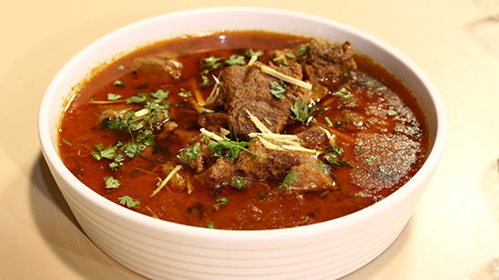

QORMA

INGREDIENTS
- - 500g meat (chicken, beef, or lamb), cut into pieces
- - 2 onions, thinly sliced
- - 1 cup yogurt
- - 2 tbsp ginger-garlic paste
- - 1 tsp turmeric powder
- - 2 tsp red chili powder
- - 1 tsp garam masala
- - 1 tsp coriander powder
- - 4-5 cloves
- - 2-3 cardamom pods
- - 1 cinnamon stick
- - 1 bay leaf
- - 1/2 cup ghee or oil
- - Salt to taste
- - Fresh coriander leaves, chopped, for garnish
INSTRUCTIONS
- 1. Heat ghee or oil in a large pot. Add sliced onions and fry until golden brown. Remove half and set aside for garnishing.
- 2. Add ginger-garlic paste and sauté for a minute. Add meat pieces and cook until browned.
- 3. Add turmeric, red chili powder, garam masala, coriander powder, and salt. Mix well.
- 4. Add yogurt and cook until the meat is tender and the oil separates.
- 5. Garnish with fresh coriander leaves and fried onions. Serve hot with naan or rice.